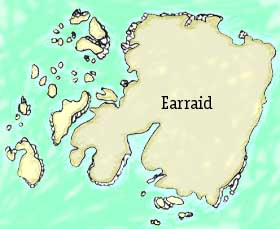

| The
Isle of Earraid Mull in Scotland |
|
|
During the building of the Dhu Heartach lighthouse by Thomas Stevenson (Robert Louis' father) the Isle of Earraid was used as a shore station for the workmen. Robert Louis Stevenson spent time there in 1870 and David Balfour in 'Kidnapped' swam ashore to Earraid after the shipwreck on the Torran Rocks. Stevenson's story 'The Merry Men', first published in 1882 was set there.
|
 |
|||
| Maintained
by: Chris Jennings HOME Last Updated: |